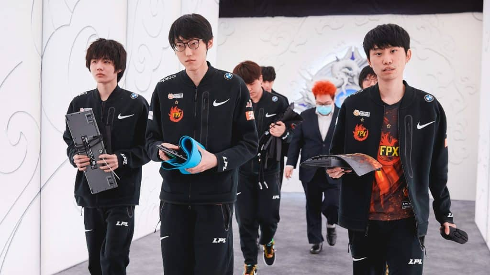
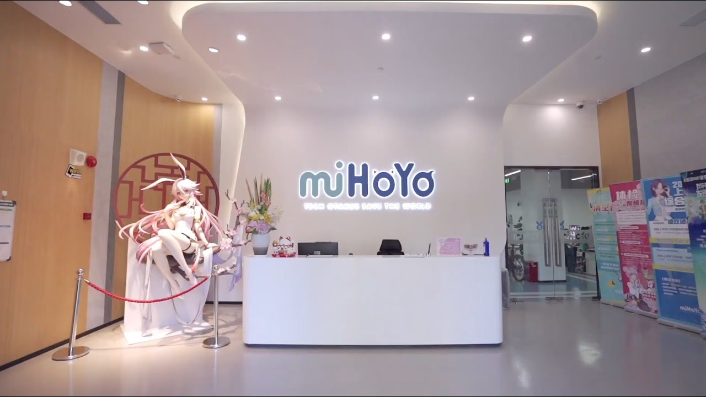
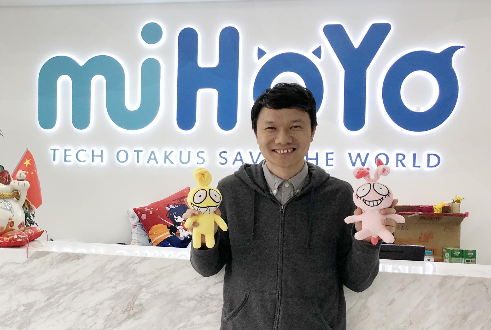

FPX disbands team and drops Doinb

FunPlus Phoenix entered the tournament as a favorite to take home their second Summoner’s Cup. However, the team fell short in the group stage going 0-4 in the second week of the round-robin. They finished last in Group A. During his own stream, FPX starting AD Carry Lin ‘Lwx’ Wei-Xiang revealed his in-game chat log with another player. When translated the messages revealed that the FPX lineup has disbanded following their performance at the 2021 World Championship. Famouse Doinb is very disappointed in the run and will find work in other teams.
Mihoyo Shifts Global Direction

Popular game developer MiHoYo known for their first hit game Honkai Impact 3rd 崩坏 3 and later one Genshin Impact (狗屎). The name change announcement first came on Feb. 13. HoYoverse announced the launch of its new "forward-thinking brand" to its many fans. "Since day one, our primary goal in content creation has been to provide our players all over the globe with something extraordinary, fresh, and intriguing," the company stated. "The launch of HoYoverse reflects our growing commitment to  providing global audiences with immersive entertainment through high-quality, diverse content." Within the press announcement, HoYoverse co-founder and CEO Haoyu Cai expressed the company's new focus on different fields in technology including artificial intelligence, cloud computing, and even pipeline construction. "Our mission in establishing HoYoverse is to create a vast and content-driven virtual world that integrates games, anime, and other diverse types of entertainment which will provide players with a high level of freedom and immersion," Haoyu stated.